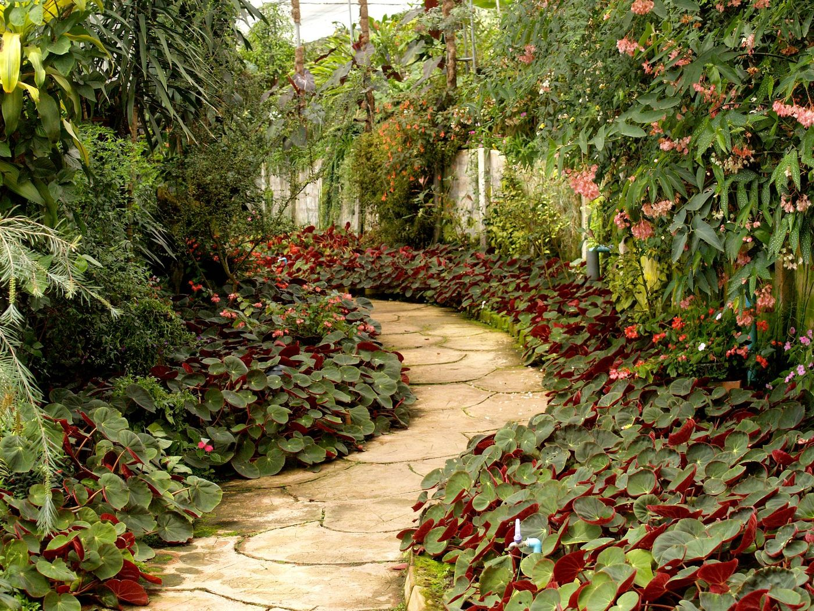
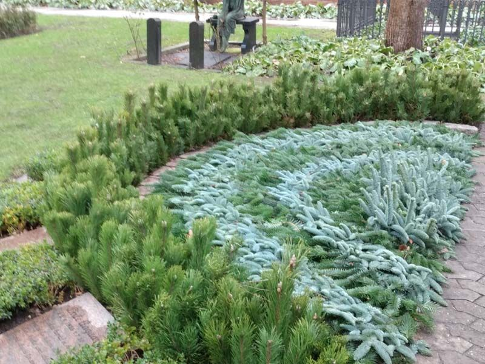
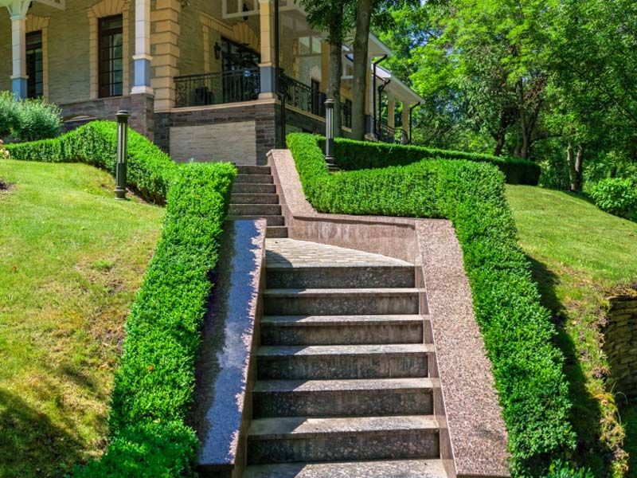

Garden design
Planting plans that suit the section and the sun.

Landscaping · Auckland
Design, paving, retaining and planting — built to suit the section and how you use it.
What we do
Planting plans that suit the section and the sun.
Patios, paths and steps built to drain properly.
Timber and block, engineered where required.
Preparation, laying and aftercare.
Natives, hedging and screening.
Regular care so it stays how it was planted.
Typical services for this trade — a live build lists only what the business actually offers.
About
Landscaping across Auckland — design, build and the ongoing care. We work with what's already on site, keep the good stuff, and build gardens that suit the way you actually use them.

Why choose us
A plan you can see before work starts.
Levels and fall done properly, first time.
Chosen for your soil and sun.
We can keep it maintained after handover.
No invented credentials — real licensing, guarantees and years trading go here on the live build.
Our work
Illustrative stock images — not this business's jobs. The live build swaps in the owner's own photos.

How it works
We look, listen and measure.
Planting plan, materials and stages.
Staged work, tidy site, clear updates.
Watering and maintenance guidance.
FAQ
Call or email and we'll talk it through.
Call or email and we'll talk it through.
Call or email and we'll talk it through.
Call or email and we'll talk it through.
Contact
Call or email to talk it through.
Email
onehungapeoplesgarden@gmail.com
Service area
Auckland and the surrounding region